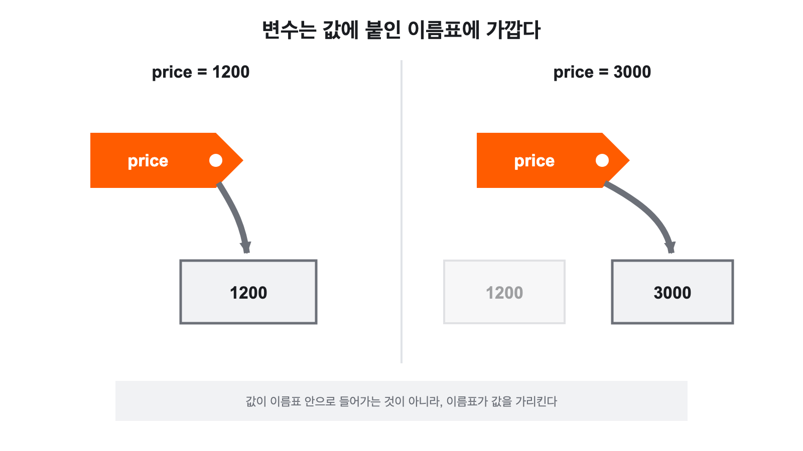

값과 변수로
정보 표현하기用值和变量
表示信息
어떻게 기억하고 계산하는지 살펴봅니다.看看程序是怎样记住并计算
名称、数量、真假这些性质不同的信息的。
장바구니 화면 하나에 들어 있는 것들一个购物车页面里装着什么
온라인 상점에서 생수 3병을 장바구니에 담았습니다. 화면에는 이런 것들이 보입니다. 생수라는 이름, 1200이라는 가격, 3이라는 수량, 그리고 결제 완료인지 아닌지를 나타내는 표시.你在网店把 3 瓶矿泉水放进购物车。页面上能看到这些东西：矿泉水这个名称、1200 这个价格、3 这个数量，还有表示是否已付款的标记。
수량을 4로 바꾸니 총액이 바로 4800원으로 바뀝니다. 쿠폰을 적용하니 또 달라집니다. 화면은 하나인데 그 안의 값들은 계속 움직입니다.把数量改成 4，总额立刻变成 4800 元。用了优惠券又变了。页面只有一个，里面的值却一直在动。
여기서 질문 하나. 이 화면을 만든 프로그램은 ‘생수’라는 글자와 1200이라는 수를 같은 방식으로 다룰까요? 만약 같은 방식이라면 왜 글자끼리는 곱할 수 없을까요?这里问一个问题：做出这个页面的程序，会用同样的方式处理“矿泉水”这几个字和 1200 这个数吗？如果方式相同，那为什么文字之间不能相乘呢？
프로그램은 이름, 수량과 참·거짓처럼 성격이 다른 정보를
어떻게 기억하고 계산할까?程序是怎样记住并计算
名称、数量、真假这些性质不同的信息的？
- 2-2에서
name = "다현"이라고 쓰고print(name + "님, ...")을 실행해 봤다.2-2 里写过name = "다현"，并运行了print(name + "님, ...")。 - 그때
=는 ‘같다’가 아니라 ‘넣어라’라는 뜻이라고 지나가듯 말했다.当时顺口说过：=不是“相等”，而是“放进去”。 +가 숫자에서는 더하기, 글자에서는 이어 붙이기로 다르게 동작한다고도 했다.也说过+在数字上是相加，在文字上是拼接，行为不同。- 코드는 읽기 → 예상 → 실행 → 비교 → 수정 순서로 다룬다.处理代码的顺序是 读 → 预测 → 运行 → 对照 → 修改。
미뤄 두었던 두 이야기를 이번 차시에서 제대로 다룹니다. 왜 같은 +가 상황에 따라 다르게 동작하는지, 그리고 =가 정확히 무슨 일을 하는지 알고 나면, 앞으로 만날 대부분의 코드에서 지금 무슨 일이 일어나는지를 스스로 설명할 수 있게 됩니다.这两件当时押后的事，这一课时讲清楚。搞明白同一个 + 为什么会因情况而异，以及 = 到底做了什么，你就能在今后遇到的大多数代码里，自己说清此刻发生了什么。
프로그램은 값을 다룬다程序处理的是值 핵심核心
앞의 장바구니를 코드로 옮겨 보겠습니다. 상품 이름은 글자이고, 가격과 수량은 숫자이며, 결제 완료 여부는 ‘참’ 또는 ‘거짓’입니다. 프로그램은 이렇게 서로 다른 정보를 값으로 표현합니다.我们把刚才的购物车搬进代码。商品名称是文字，价格和数量是数字，是否付款则是“真”或“假”。程序就是这样把不同的信息表示成值的。
"생수"
1200
3
True- 현상现象
- 영수증에 적힌 1200, 이름표에 적힌 생수, 체크박스의 . 종이 위에서는 다 그냥 잉크 자국이지만, 우리는 이것들을 서로 다른 성격의 정보로 읽습니다.收据上的 1200、标签上的矿泉水、复选框里的 。在纸上它们都只是墨迹，但我们把它们读成性质不同的信息。
- 쉬운 설명通俗说法
- 코드에 적힌 데이터 하나입니다. 더 쪼갤 필요 없이 그 자체로 뜻을 가지는 조각입니다.它是写在代码里的一条数据。不必再拆分，本身就有含义的一小块。
- 정확한 정의准确定义
- 프로그램이 저장하고 계산할 수 있는 하나의 데이터. 자료형에 따라 적용할 수 있는 연산이 정해진다.程序可以存储与计算的一条数据。可施加的运算由其数据类型决定。
- 경계边界
- 값은 데이터 그 자체이고, 곧 배울 변수는 그 값을 가리키는 이름입니다.
1200은 값이고price는 변수입니다.值是数据本身，而马上要学的变量是指向这个值的名字。1200是值，price是变量。 - 문장 속 사용例句
- “이 줄에서
count가 가리키는 값은 3이다.”“这一行里count指向的值是 3。”
프로그램은 값을 다룬다程序处理的是值 핵심核心(이어서)（续）
여기서 중요한 성질이 하나 나옵니다. Python은 값의 성격에 따라 할 수 있는 일을 구분합니다. 숫자는 더하거나 곱할 수 있고, 문자열은 이어 붙일 수 있습니다. 그래서 "생수" * "물" 같은 코드는 뜻을 만들 수 없어 오류가 됩니다.这里带出一条重要性质：Python 按值的性质来区分能做什么。数字能相加相乘，字符串能拼接。所以像 "생수" * "물" 这样的代码构不成意义，会报错。
프로그램은 ‘생수’와 1200을 같은 방식으로 다루지 않습니다. 값마다 종류가 있고, 종류에 따라 허용되는 계산이 다릅니다. 그 ‘종류’를 부르는 이름이 다음 쪽의 자료형입니다.程序不会用同样的方式处理“矿泉水”和 1200。每个值都有种类，种类不同，允许的计算也不同。这个“种类”的名字，就是下一页的数据类型。
자료형은 값의 종류다数据类型就是值的种类 핵심核心
- 현상现象
- 학교에서 나눠 준 서류에 “학년: 2”와 “이름: 김다현”이 있습니다. 둘 다 글자로 적혀 있지만 학년끼리는 더할 수 있어도(2학년 + 1 = 3학년) 이름끼리 더하는 것은 뜻이 없습니다.学校发的表格上有“年级：2”和“姓名：金多贤”。两个都是用字写的，但年级之间可以相加（2 年级 + 1 = 3 年级），姓名之间相加却没有意义。
- 쉬운 설명通俗说法
- 이 값이 어떤 종류인지 나타내는 분류입니다. 종류가 정해지면 그 값으로 할 수 있는 일도 함께 정해집니다.它是表示这个值属于哪一类的分类。类别一定，能拿这个值做什么也就跟着定了。
- 정확한 정의准确定义
- 값의 종류와 그 값에 적용할 수 있는 연산의 집합을 규정하는 분류.规定值的种类，以及可施加于该值的运算集合的分类。
- 경계边界
- 자료형은 값에 붙는 성질이지 변수 이름에 영원히 새겨지는 것이 아닙니다. Python에서는 같은 이름이 나중에 다른 종류의 값을 가리킬 수도 있습니다.数据类型是附着在值上的性质，并不会永久刻在变量名上。在 Python 里，同一个名字之后也可以指向别的种类的值。
- 문장 속 사용例句
- “이 값의 자료형이
str이라서 곱셈이 안 됐다.”“这个值的类型是str，所以乘不了。”
먼저 다음 네 가지를 씁니다. 이 네 개만 알아도 이번 학기 대부분의 코드를 읽을 수 있습니다.先用下面四种。光会这四种，本学期大部分代码就读得懂了。
자료형은 값의 종류다数据类型就是值的种类 핵심核心(이어서)（续）
| 자료형数据类型 | 뜻含义 | 예例 |
|---|---|---|
int | 정수整数 | 3, 1200, -5 |
float | 소수점이 있는 수带小数点的数 | 3.5, 0.25 |
str | 문자열, 즉 글자의 나열字符串，也就是文字的排列 | "생수", "1200""생수"、"1200" |
bool | 참 또는 거짓真或假 | True, False |
눈에는 같아 보여도 다른 값看着一样，其实不同的值
1200과 "1200"은 화면에서 거의 같아 보입니다. 따옴표 두 개 차이뿐입니다. 그러나 자료형이 다르므로 완전히 다른 값입니다. 앞의 것은 계산할 수 있는 정수이고, 뒤의 것은 글자로 이루어진 문자열입니다.1200 和 "1200" 在屏幕上几乎一模一样，只差两个引号。可它们类型不同，所以是完全不同的值。前者是能计算的整数，后者是由文字组成的字符串。
print(1200 + 300) # 1500
print("1200" + "300") # 1200300드디어 2-2에서 미뤄 둔 이야기의 답입니다. +는 하나의 기호지만 양쪽 값의 자료형을 보고 무엇을 할지 정합니다. 숫자끼리면 더하고, 문자열끼리면 이어 붙입니다. 아래 결과 1200300은 계산 결과가 아니라 글자 1200 뒤에 글자 300을 붙여 놓은 것입니다.这就是 2-2 押后那件事的答案。+ 虽然只是一个符号，却要看两边值的类型才决定做什么。数字之间就相加，字符串之间就拼接。下面那个结果 1200300 不是算出来的，而是把文字 1200 后面接上了文字 300。
자료형은 값의 종류다数据类型就是值的种类 핵심核心(이어서)（续）
“분명히 숫자를 넣었는데 계산이 안 돼요”라는 상황의 대부분이 이것입니다. 값이 숫자처럼 보일 뿐 실제로는 문자열인 경우입니다. 뒤에서 배울 input()이 바로 그런 값을 만들어 냅니다.“我明明填的是数字，怎么算不了”——这类情况大多就是它。值只是看起来像数字，实际上是字符串。后面要学的 input() 造出的正是这种值。
Python은 대입한 값을 보고 자료형을 정한다Python 看你赋了什么值来定类型 핵심核心
Python에서는 변수를 만들 때 자료형을 따로 적지 않아도 됩니다. 오른쪽에 넣은 값을 보고 Python이 현재 자료형을 판단합니다.在 Python 里创建变量时不必另外写类型。Python 会看你放到右边的值来判断当前的类型。
price = 1200 # 지금 값은 int
price = "무료" # 이제 값은 str이것이 뜻하는 바를 정확히 새겨 두어야 합니다. Python에서 자료형은 변수 이름에 영원히 고정되는 것이 아닙니다. 같은 이름이 나중에 다른 자료형의 값을 가리킬 수 있습니다.这句话的含义要记准：在 Python 里，类型并不会永久固定在变量名上。同一个名字之后可以指向别的类型的值。
다만 할 수 있다는 것과 그렇게 해도 좋다는 것은 다릅니다. 한 변수에 성격이 전혀 다른 값을 번갈아 넣으면 코드를 읽는 사람이 “지금 이 이름은 숫자인가 글자인가”를 계속 추적해야 합니다. 그래서 보통은 같은 의미의 값을 유지합니다.不过“能这么做”和“该这么做”是两回事。同一个变量里轮流放性质完全不同的值，读代码的人就得一直追踪“这个名字现在是数字还是文字”。所以通常保持含义相同的值。
지금 자료형을 확인하는 방법查看此刻的类型
실행 중인 값의 자료형은 type()으로 확인할 수 있습니다. 앞으로 “이게 왜 안 되지?” 싶을 때 가장 먼저 써 볼 도구입니다.运行中的值的类型可以用 type() 查看。以后遇到“这怎么不行呢？”，它是最先该拿出来的工具。
price = 1200
print(type(price)) # <class 'int'><class 'int'><class 'int'>라는 표시가 낯설 수 있습니다. 지금은 “이 값은 int 종류다”라고만 읽으면 충분합니다. class라는 낱말의 뜻은 나중에 필요할 때 다룹니다.<class 'int'> 这个写法可能有点陌生。现在只要读成“这个值是 int 这一类”就够了。class 这个词的含义，以后需要时再讲。
Python은 대입한 값을 보고 자료형을 정한다Python 看你赋了什么值来定类型 핵심核心(이어서)（续）
3-2에서는 짧은 코드 하나를 실행 전에 읽고 결과를 예상합니다. 그때 가장 먼저 하는 일이 “지금 이 값은 어떤 종류인가”를 판단하는 것입니다. 예상이 빗나가는 곳이 바로 배울 곳입니다.3-2 里我们要在运行前先读一段短代码并预测结果。那时最先要做的，就是判断“此刻这个值是什么种类”。预测落空的地方，正是该学的地方。
자료형을 직접 적어 두는 방법把类型直接写出来的方法 확장拓展
Python에서도 변수 이름 뒤에 자료형을 표시할 수 있습니다. 이를 타입 힌트(type hint)라고 합니다.Python 里也可以在变量名后面标出类型。这叫类型提示（type hint）。
price: int = 1200
product: str = "생수"타입 힌트는 이 변수에 어떤 값이 들어오기를 기대하는지를 사람과 개발 도구에 알려 줍니다. 그런데 이름이 ‘힌트’인 데는 이유가 있습니다. Python 자체는 힌트와 다른 자료형이 들어와도 실행을 막지 않습니다.类型提示告诉人和开发工具这个变量期望装什么样的值。可它叫“提示”是有原因的：Python 本身即使进来的类型和提示不符，也不会阻止运行。
price: int = 1200
price = "무료" # 편집기는 경고하지만 Python은 이 대입을 실행한다
print(price) # 무료따라서 Python의 타입 힌트는 주로 읽는 사람에게 의도를 알리고, 편집기나 별도의 검사 도구가 잘못된 대입을 미리 발견하도록 돕는 역할을 합니다.所以 Python 的类型提示主要起两个作用：向读代码的人表明意图，以及帮助编辑器或专门的检查工具提前发现错误的赋值。
자료형을 직접 적어 두는 방법把类型直接写出来的方法 확장拓展(이어서)（续）
언어에 따라 자료형을 적는 것이 필수이기도 하고, 적지 않아도 값에서 알아내기도 합니다. 10회 이후 웹 개발에서 만날 수 있는 TypeScript는 두 방식이 모두 가능합니다.依语言不同，写类型有时是必需的，有时不写也能从值推断出来。第 10 次课以后在 Web 开发中可能遇到的 TypeScript，两种方式都支持。
let price: number = 1200; // 자료형을 직접 표시
let count = 3; // 값으로부터 number라고 추론TypeScript에서는 자료형을 명시하면 그 변수에 다른 자료형의 값을 대입하지 못하도록 검사 단계에서 막습니다. 자료형을 생략하더라도 처음 대입한 값을 보고 추론하므로, 이후 문자열을 넣으면 실행 전에 오류로 알려 줍니다.在 TypeScript 里，一旦写明类型，就会在检查阶段阻止你把别的类型的值赋给该变量。即使省略类型，它也会依据首次赋的值来推断，之后再放字符串，运行前就会报错提醒。
let price: number = 1200;
price = "무료"; // 오류: number 변수에 string을 대입할 수 없음
let count = 3; // number라고 추론
count = "세 개"; // 오류: number 변수에 string을 대입할 수 없음자료형을 직접 적어 두는 방법把类型直接写出来的方法 확장拓展(이어서)（续）
| 구분项目 | Python의 타입 힌트Python 的类型提示 | TypeScript의 자료형TypeScript 的类型 |
|---|---|---|
| 적는 방법写法 | price: int = 1200 | let price: number = 1200 |
| 다른 자료형을 대입하면赋上别的类型时 | 편집기가 경고할 수 있지만 실행 자체는 허용한다.编辑器可能警告，但运行本身是允许的。 | 자료형 검사 오류가 발생해 올바른 코드로 인정하지 않는다.会产生类型检查错误，不承认它是合法代码。 |
| 생략하면省略时 | 실행 중 대입된 값에 따라 자료형이 달라질 수 있다.运行中类型会随所赋的值而改变。 | 처음 대입한 값을 보고 추론하여 이후에도 검사한다.依据首次所赋的值推断，此后也照此检查。 |
Python 자료형 표기를 외우는 것보다 지금 이 값이 어떤 종류이며 그 값으로 어떤 작업을 할 수 있는지 판단하는 것이 훨씬 중요합니다. 표기법은 필요할 때 찾아보면 됩니다.比起背 Python 的类型写法，判断此刻这个值是什么种类、拿它能做什么要重要得多。写法需要时查一下就行。
변수는 값에 붙인 이름이다变量是给值起的名字 핵심核心
값을 한 번 쓰고 버릴 것이 아니라면, 그 값을 다시 부를 이름이 필요합니다.如果一个值不是用完就丢，就需要一个能再次叫出它的名字。
- 현상现象
- 사물함에 이름표를 붙여 둡니다. 다음에 올 때 “내 사물함”이라고 부르면 됩니다. 안에 든 물건이 바뀌어도 이름표는 그대로입니다.在储物柜上贴个名牌。下次来只要说“我的柜子”就行。里面的东西换了，名牌还在。
- 쉬운 설명通俗说法
- 값을 기억해 두고 다시 쓰기 위해 붙인 이름입니다.为了记住一个值、以便再次使用而给它起的名字。
- 정확한 정의准确定义
- 값을 가리키는 이름. 대입을 통해 어떤 값을 가리킬지 정해지며, 다시 대입하면 가리키는 값이 바뀐다.指向值的名字。通过赋值确定它指向哪个值，再次赋值则改变所指的值。
- 경계边界
- 흔히 ‘값을 담는 상자’라고 하지만, Python에서 변수는 상자보다 이름표에 가깝습니다. 값을 안에 넣어 두는 것이 아니라 값을 가리킵니다.人们常说“装值的盒子”，但在 Python 里，变量更像名牌而不是盒子。它不是把值装在里面，而是指向那个值。
- 문장 속 사용例句
- “
total이라는 변수에 계산 결과를 넣었다.”“我把计算结果放进了名为total的变量。”
product = "생수"
price = 1200
count = 3
paid = False변수는 값에 붙인 이름이다变量是给值起的名字 핵심核心(이어서)（续）
=는 ‘같다’가 아니다= 不是“相等”
수학에서 =는 양쪽이 같다는 뜻입니다. Python에서는 다릅니다. 오른쪽 값을 왼쪽 이름에 대입한다는 뜻, 즉 “오른쪽 값을 왼쪽 이름으로 기억해라”라는 명령입니다.在数学里 = 表示两边相等。在 Python 里不是。它表示把右边的值赋给左边的名字，也就是“把右边的值用左边这个名字记下来”这条命令。
방향이 있다는 점이 핵심입니다. 그래서 1200 = price라고는 쓸 수 없습니다. 왼쪽에는 이름이 와야 하기 때문입니다.有方向这一点是关键。所以不能写 1200 = price，因为左边必须是名字。
변수는 값에 붙인 이름이다变量是给值起的名字 핵심核心(이어서)（续）

값은 바뀌고, 이름은 남는다值会变，名字留下 핵심核心
‘변수’라는 이름 자체가 변할 수 있는 수라는 뜻입니다. 같은 이름에 다시 대입하면 가리키는 값이 바뀝니다.“变量”这个词本身就是可变的量的意思。给同一个名字再次赋值，它指向的值就变了。
count = 3
count = 4
print(count)해설 보기查看解析
4가 출력됩니다. 코드는 위에서 아래로 실행되므로 먼저 3을 기억했다가 다음 줄에서 4를 다시 대입합니다. print가 실행되는 시점에 count가 가리키는 값은 4입니다.输出 4。代码是从上往下执行的，先记住 3，下一行又赋了 4。执行 print 的那一刻，count 指向的值是 4。
여기서 count = 3과 count = 4가 모순이 아니라는 점이 중요합니다. 수학이라면 모순이지만, 이것은 순서대로 실행되는 명령이기 때문입니다.这里要紧的是：count = 3 和 count = 4 并不矛盾。若在数学里是矛盾的，但这是按顺序执行的命令。
이름을 잘 짓는 것도 실력이다起好名字也是本事
변수 이름은 값의 의미가 드러나게 짓습니다. x보다 price가, n보다 student_count가 코드를 읽는 사람에게 훨씬 많은 정보를 줍니다.变量名要起得让值的含义显露出来。比起 x，price 更好；比起 n，student_count 给读代码的人的信息多得多。
값은 바뀌고, 이름은 남는다值会变，名字留下 핵심核心(이어서)（续）
a = 35
b = 5
c = a * b
d = c / 60
print(d)minutes_per_day = 35
days = 5
total_minutes = minutes_per_day * days
hours = total_minutes / 60
print(hours)두 코드는 완전히 똑같이 동작합니다. 컴퓨터에게는 차이가 없습니다. 차이는 오직 사람이 읽을 때 생깁니다. 그리고 이 수업의 목표가 ‘코드를 읽는 힘’이라는 점을 떠올리면, 이름 짓기는 사소한 취향 문제가 아닙니다.两段代码运行起来完全一样。对计算机来说没有差别。差别只在人读的时候产生。而想到这门课的目标是“读代码的能力”，起名字就不是无关紧要的个人口味问题。
3-2에서는 AI 또는 교사가 준 코드를 읽고 검증합니다. 그때 가장 먼저 하는 일이 daily_minutes, goal_days 같은 변수 이름에서 무엇을 담은 값인지 알아내는 것입니다. 내가 읽을 수 없는 코드는 검증할 수도 없습니다.3-2 里要读并验证 AI 或老师给的代码。那时最先要做的，就是从 daily_minutes、goal_days 这些变量名里看出它装的是什么。我读不懂的代码，也就验证不了。
연산자는 값에 규칙을 적용한다运算符把规则施加到值上 핵심核心
- 현상现象
- 계산기의
+,−,×버튼. 버튼 자체는 값이 아니라 값을 가지고 무엇을 할지 정하는 기호입니다.计算器上的+、−、×键。键本身不是值，而是决定拿值来做什么的符号。 - 쉬운 설명通俗说法
- 값을 계산하거나 비교할 때 쓰는 기호입니다.计算或比较值时使用的符号。
- 정확한 정의准确定义
- 하나 이상의 값에 정해진 규칙을 적용해 새로운 값을 만들어 내는 기호.对一个或多个值施加既定规则，从而产生新值的符号。
- 경계边界
- 연산자는 새 값을 만들어 낼 뿐 원래 값을 바꾸지 않습니다.
5 + 2를 계산해도5는 그대로5입니다.运算符只是产生新值，并不改变原来的值。算了5 + 2，5还是5。 - 문장 속 사용例句
- “나머지를 구해야 하니
%연산자를 썼다.”“要求余数，所以用了%运算符。”
연산자는 값에 규칙을 적용한다运算符把规则施加到值上 핵심核心(이어서)（续）
산술 연산算术运算
| 연산자运算符 | 뜻含义 | 예例 | 결과结果 |
|---|---|---|---|
+ | 더하기加 | 5 + 2 | 7 |
- | 빼기减 | 5 - 2 | 3 |
* | 곱하기乘 | 5 * 2 | 10 |
/ | 나누기除 | 5 / 2 | 2.5 |
// | 몫商 | 5 // 2 | 2 |
% | 나머지余数 | 5 % 2 | 1 |
아래 세 줄을 눈여겨보세요. /는 나눈 결과를 소수까지 주고, //는 몫만, %는 나머지만 줍니다. 이 셋을 헷갈리지 않는 것이 이번 차시의 실용적인 목표 하나입니다.请留意下面三行。/ 给出带小数的结果，// 只给商，% 只给余数。不把这三个搞混，是这一课时一个很实用的目标。
//와 %는 언제 쓰나// 和 % 什么时候用“135분은 몇 시간 몇 분인가?”를 구할 때 씁니다. 135 // 60은 2(시간), 135 % 60은 15(분)입니다. 3-2에서 읽을 코드도 minutes / 60으로 시간을 구하는데, 이때 /와 //의 차이가 결과의 모양을 바꿉니다.求“135 分钟是几小时几分钟”时用。135 // 60 是 2（小时），135 % 60 是 15（分钟）。3-2 里要读的代码也用 minutes / 60 求小时，这时 / 和 // 的差别会改变结果的样子。
/의 결과는 항상 소수다/ 的结果永远是小数4 / 2는 2가 아니라 2.0입니다. 나누어떨어져도 자료형이 float이 됩니다. 결과에 .0이 붙어 있으면 나누기를 거쳤다는 뜻으로 읽으면 됩니다.4 / 2 不是 2，而是 2.0。即使除得尽，类型也会变成 float。看到结果带着 .0，就可以读作“这里经过了除法”。
소수점 계산이 어긋나는 이유小数计算为什么会有偏差 확장拓展
Python에서 소수를 계산하면 예상과 다른 결과가 나올 때가 있습니다. 처음 보면 “컴퓨터가 틀렸다”고 생각하기 쉽지만, 그렇지 않습니다.在 Python 里做小数计算，有时结果和预期不同。第一次见容易以为“计算机算错了”，其实不是。
result = 0.1 + 0.2
print(result)0.30000000000000004소수점 계산이 어긋나는 이유小数计算为什么会有偏差 확장拓展(이어서)（续）
컴퓨터가 직접 실행하는 기계어는 0과 1로 표현되므로 컴퓨터는 2진법을 씁니다. 0 또는 1 한 자리를 비트(bit)라고 하고, 8비트를 묶은 단위를 바이트(byte)라고 합니다.计算机直接执行的机器语言由 0 和 1 表示，所以计算机使用二进制。0 或 1 的一位叫比特（bit），8 个比特合起来的单位叫字节（byte）。
1 byte = 8 bits8개의 비트로는 서로 다른 256개의 배열을 만들 수 있습니다. 이 배열을 음수가 없는 정수로 읽으면 0부터 255까지 나타낼 수 있습니다. 음수도 필요하다면 같은 256개 배열 가운데 일부를 음수로 해석하도록 약속합니다. 그러면 8비트로 −128부터 127까지 나타냅니다. 지금은 음수 기호를 글자처럼 따로 저장하는 것이 아니라, 정해진 비트 배열을 규칙에 따라 음수로 해석한다는 점만 이해하면 됩니다.8 个比特能组成 256 种不同的排列。把这些排列读成非负整数，可以表示 0 到 255。若也需要负数，就约定把这 256 种排列中的一部分解释为负数，于是 8 比特可表示 −128 到 127。现在只要理解一点：负号并不是像文字那样另外存起来的，而是把既定的比特排列按规则解释成负数。
소수는 비트를 부호, 소수점의 위치를 나타내는 지수, 유효숫자로 나누어 저장합니다. 소수점의 위치를 움직여 수를 표현하기 때문에 이를 부동소수점(floating point) 방식이라고 합니다.小数则把比特分成符号、表示小数点位置的指数和有效数字来存储。因为是移动小数点的位置来表示数，所以叫浮点（floating point）方式。
쓸 수 있는 비트 수는 한정되어 있습니다. 십진수 0.1처럼 2진법으로 정확히 끝나지 않는 소수는 가장 가까운 값으로 저장해야 하므로 아주 작은 오차가 생깁니다. 십진법으로 1/3을 쓰면 0.3333…이 끝없이 이어지는 것과 같은 사정입니다.可用的比特数是有限的。像十进制的 0.1 这种在二进制里除不尽的小数，只能存成最接近的值，于是产生极小的误差。就像十进制写 1/3 会得到 0.3333… 一直延续下去一样。
즉 이 현상은 Python만의 결함이 아니라 컴퓨터가 소수를 표현하는 방식의 한계입니다. 대부분의 프로그래밍 언어에서 똑같이 나타납니다.也就是说，这个现象不是 Python 的缺陷，而是计算机表示小数这一方式的极限。在大多数编程语言里都一样。
소수점 계산이 어긋나는 이유小数计算为什么会有偏差 확장拓展(이어서)（续）
화면에 보여 줄 자릿수를 정할 때는 round()로 반올림할 수 있습니다.要决定在屏幕上显示几位小数时，可以用 round() 四舍五入。
result = 0.1 + 0.2
print(round(result, 2)) # 0.3round()는 화면에 적절한 값을 보여 주는 방법이지 모든 계산을 정확하게 만들어 주지 않습니다. 정확한 금액 계산이 중요하다면 원 단위처럼 정수로 저장하거나 목적에 맞는 별도의 계산 방법을 씁니다.round() 是把合适的值显示出来的方法，并不能让所有计算都变得精确。若精确的金额计算很重要，就像以元为单位那样存成整数，或采用与目的相符的另一套计算方法。
그러니 AI가 만든 코드가 금액·평균·비율을 계산한다면, 예상값과 실제 출력값을 반드시 함께 확인하세요.所以只要 AI 写的代码涉及金额、平均、比例，就一定要把预期值和实际输出放在一起核对。
비교 연산과 = / ==의 구분比较运算与 = / == 的区分 핵심核心
비교의 결과는 숫자가 아니라 True 또는 False입니다. 앞에서 본 네 자료형 가운데 bool이 여기서 등장합니다.比较的结果不是数字，而是 True 或 False。前面看到的四种类型里，bool 在这里登场。
| 연산자运算符 | 뜻含义 | 예例 | 결과结果 |
|---|---|---|---|
== | 두 값이 같다两个值相等 | 3 == 3 | True |
!= | 두 값이 다르다两个值不等 | 3 != 2 | True |
> | 왼쪽이 더 크다左边更大 | 3 > 2 | True |
< | 왼쪽이 더 작다左边更小 | 3 < 2 | False |
>= | 왼쪽이 크거나 같다左边大于或等于 | 3 >= 3 | True |
<= | 왼쪽이 작거나 같다左边小于或等于 | 3 <= 2 | False |
이 한 글자 차이가 가장 흔한 실수다这一个字符之差，是最常见的错误
= 대입= 赋值넣어라. 오른쪽 값을 왼쪽 이름으로 기억한다.放进去。把右边的值用左边的名字记住。
count = 3결과값이 없다. 명령이다.没有结果值。它是一条命令。
== 비교== 比较같은가? 두 값이 같은지 확인한다.相等吗？确认两个值是否相同。
count == 3True 또는 False가 결과값으로 나온다.会得到 True 或 False 作为结果值。
비교 연산과 = / ==의 구분比较运算与 = / == 的区分 핵심核心(이어서)（续）
3-2에서 조건문을 배우면 if count == 3: 같은 코드를 만나게 됩니다. 그때 =를 하나만 쓰면 “비교하려던 자리에서 값을 바꿔 버리는” 일이 생깁니다. 지금 확실히 갈라 두면 그때 고생하지 않습니다.3-2 学到条件语句时，你会遇到 if count == 3: 这样的代码。那时若只写一个 =，就会出现“本想比较，却把值改掉了”的事。现在把它分清楚，到时候就不用受苦。
=와 ==의 차이를 짝에게 한 문장씩으로 설명해 보세요. 각각 “무엇을 하는가”와 “결과가 있는가”를 넣어서 말해 보면 좋습니다.请各用一句话，向同桌说明 = 和 == 的区别。分别把“它做什么”和“有没有结果”说进去会更好。
입력 · 처리 · 출력으로 코드 읽기按输入 · 处理 · 输出来读代码 핵심核心
2-2에서 print(name + "님, ...")을 세 칸으로 나눠 읽었습니다. 그 방법을 이제 정식으로 씁니다. 아무리 짧은 프로그램도 입력(input) → 처리(process) → 출력(output)의 흐름으로 읽을 수 있습니다.2-2 里我们把 print(name + "님, ...") 分成三格来读。现在正式用这个方法。再短的程序也能按输入（input）→ 处理（process）→ 输出（output）的流程来读。
price = 1200
count = 3
total = price * count
print(total)코드에 적힌 가격 1200과 수량 3写在代码里的价格 1200 和数量 3
둘을 곱해서 total에 저장两者相乘并存入 total
print가 합계를 화면에 표시print 把合计显示到屏幕上
지금은 입력이 코드에 직접 적혀 있습니다. 그러나 실제 프로그램에서 입력은 키보드, 파일, 센서나 웹 요청에서 들어옵니다. 10회 이후 웹서비스를 만들 때는 브라우저가 보낸 요청이 입력이 됩니다.现在输入是直接写在代码里的。但在真实程序里，输入来自键盘、文件、传感器或网络请求。第 10 次课以后做网络服务时，浏览器发来的请求就是输入。
키보드에서 값을 받기从键盘接收值
사용자가 직접 값을 넣게 하려면 input()을 씁니다.想让用户自己填值，就用 input()。
name = input("이름을 입력하세요: ")
print(name + "님, 반갑습니다.")괄호 안의 글자는 사용자에게 보여 줄 안내 문구입니다. 실행하면 프로그램이 멈추고 사용자가 입력할 때까지 기다립니다. 그리고 사용자가 입력한 값이 name에 대입됩니다.括号里的文字是给用户看的提示语。运行后程序会停下来，等用户输入。用户输入的值随后被赋给 name。
입력 · 처리 · 출력으로 코드 읽기按输入 · 处理 · 输出来读代码 핵심核心(이어서)（续）
input()을 실행하면在 Notebook 里运行 input() 时셀 위쪽에 입력 칸이 나타나고 셀은 실행 중 상태로 멈춰 있습니다. 값을 입력하고 Enter를 눌러야 다음으로 넘어갑니다. 입력 칸을 못 보고 “멈췄다”고 오해하기 쉬우니 기억해 두세요.单元格上方会出现输入框，而单元格停在运行中状态。必须输入值并按 Enter 才会往下走。很容易没看见输入框就误以为“卡住了”，请记住这一点。
input()은 언제나 문자열을 준다input() 给的永远是字符串 핵심核心
여기가 이번 차시에서 가장 자주 사고가 나는 지점입니다. 앞에서 “숫자처럼 보이지만 문자열인 값”을 경고했는데, 그 값을 만들어 내는 주범이 바로 input()입니다.这里是这一课时最常出事的地方。前面提醒过“看着像数字其实是字符串的值”，而造出这种值的罪魁祸首正是 input()。
input()으로 받은 값은 기본적으로 문자열입니다. 사용자가 3을 입력해도 Python은 우선 "3"이라는 글자로 받습니다. 화면에는 똑같이 3으로 보이지만 계산은 되지 않습니다.用 input() 接到的值默认是字符串。用户就算输入 3，Python 先收到的也是 "3" 这个文字。屏幕上一样显示 3，却算不了。
count_text = input("수량을 입력하세요: ")
count = int(count_text)
print(count * 2)int()는 정수로 바꿀 수 있는 문자열을 정수로 변환합니다. 변수 이름을 count_text와 count로 나눠 둔 것도 의도적입니다. 이름만 봐도 어느 쪽이 글자이고 어느 쪽이 숫자인지 드러납니다.int() 把能转成整数的字符串转成整数。把变量名分成 count_text 和 count 也是有意为之：光看名字就知道哪个是文字、哪个是数字。
input()은 언제나 문자열을 준다input() 给的永远是字符串 핵심核心(이어서)（续）
사용자가 세 개처럼 숫자가 아닌 글자를 입력하면 int()가 변환할 수 없어 오류가 납니다. 이런 입력을 안전하게 다루는 방법은 3-2에서 조건문을 배운 뒤에 나옵니다.用户若输入三个这样的非数字文字，int() 转不了就会报错。安全处理这类输入的方法，要等 3-2 学过条件语句之后才出现。
지금 기억할 것은 하나입니다. 사용자의 입력은 언제나 예상과 다를 수 있다. 이 관점은 뒤에서 직접 만든 서비스를 시험할 때까지 그대로 이어집니다.现在只要记住一句：用户的输入随时可能出乎预料。这个视角会一直延伸到后面测试自己做的服务的时候。
출력은 읽는 사람을 고려해야 한다输出要替读的人着想 핵심核心
값 하나만 출력하면 그 프로그램을 만든 사람 외에는 뜻을 알 수 없습니다.只输出一个值，除了写这个程序的人以外，别人看不懂它是什么意思。
total = 3600
print(total)36003600이 무엇인지 알 수 없습니다. 금액인지, 초인지, 사람 수인지.不知道 3600 是什么。是金额、是秒数，还是人数？
total = 3600
print(f"총 금액은 {total}원입니다.")총 금액은 3600원입니다.무엇을 계산한 값이며 단위가 무엇인지 드러납니다.算的是什么、单位是什么，都显出来了。
f-string
문자열 앞에 붙인 f는 문자열 안의 {} 자리에 변수 값을 넣을 수 있게 합니다. 이를 f-string이라고 합니다.字符串前面加的 f，让字符串里 {} 的位置可以填入变量的值。这叫 f-string。
total = 3600
print(f"총 금액은 {total}원입니다.")
# ↑ ↑
# f를 붙인다 {} 안에 변수 이름f를 빠뜨리면 어떻게 될까요? {total}이 값으로 바뀌지 않고 글자 그대로 출력됩니다. 이것도 오류가 나지 않으므로, 출력 결과를 직접 보고 알아채야 합니다.漏了 f 会怎样？{total} 不会被换成值，而是原样打出来。这也不会报错，所以只能靠自己看输出结果才发现。
출력은 읽는 사람을 고려해야 한다输出要替读的人着想 핵심核心(이어서)（续）
총 금액은 {total}원입니다.출력에 단위를 함께 적으면 계산 실수를 스스로 발견하게 됩니다. “총 학습 시간은 175시간입니다”라는 문장이 나오면 “일주일에 175시간? 이상한데?” 하고 곧바로 알아챌 수 있습니다. 단위 없이 175만 나왔다면 그냥 지나쳤을 것입니다.输出时把单位一并写上，能让你自己发现算错。看到“总学习时间是 175 小时”这句，就会立刻反应过来“一周 175 小时？不对劲吧？”。要是只出来一个 175，八成就放过去了。
AI가 만든 코드를 읽는 네 가지 질문读 AI 写的代码要问的四个问题 핵심核心
AI가 다음 코드를 만들었다고 해 봅시다. 실행하기 전에 읽습니다.假设下面这段代码是 AI 写的。运行之前先读。
minutes_per_day = 35
days = 5
total_minutes = minutes_per_day * days
hours = total_minutes / 60
print(f"총 학습 시간은 {hours}시간입니다.")- 입력값은 무엇이며 단위는 무엇인가?
하루 35, 5일. 변수 이름의minutes를 보면 단위는 분이다.输入值是什么，单位是什么？
每天 35，共 5 天。从变量名里的minutes可知单位是分钟。 - 각 변수 이름은 값의 의미를 잘 나타내는가?
minutes_per_day,days,total_minutes는 뜻이 드러난다. 다만hours는 나눗셈 결과이므로 소수가 나온다는 점을 이름만으로는 알 수 없다.各个变量名是否把值的含义表达清楚了？minutes_per_day、days、total_minutes含义明确。只是hours是除法结果、会得到小数这一点，光看名字看不出来。 - 어떤 계산을 거쳐 결과가 만들어지는가?
35 × 5 = 175분, 175 ÷ 60 ≈ 2.9166… 시간.经过什么计算得出结果？
35 × 5 = 175 分钟，175 ÷ 60 ≈ 2.9166… 小时。 - 예상 출력값은 현실적으로 맞는가?
“총 학습 시간은 2.9166666666666665시간입니다.” 값은 맞지만 보여 주기에는 적절하지 않다.round()를 쓰거나//·%로 ‘2시간 55분’으로 바꾸는 편이 낫다.预期的输出值在现实中说得通吗？
“总学习时间是 2.9166666666666665 小时。”值没错，但不适合这样展示。用round()，或用//、%换成“2 小时 55 分钟”更好。
AI가 만든 코드를 읽는 네 가지 질문读 AI 写的代码要问的四个问题 핵심核心(이어서)（续）
코드가 문법적으로 실행된다는 사실과 계산의 뜻이 올바르다는 사실은 완전히 다른 이야기입니다.代码在语法上跑得起来，和计算的含义正确，完全是两码事。
예를 들어 하루 학습 시간을 분으로 넣었는데 AI가 이를 시간으로 착각해 total_hours = hours_per_day * days라고 만들었다고 해 봅시다. 코드는 오류 없이 실행되고 175라는 숫자도 나옵니다. 그런데 “일주일에 175시간 공부했다”는 결과는 한 주가 168시간이라는 사실과 어긋납니다.比如说，你把每天的学习时间按分钟填了进去，AI 却误当成小时，写成了 total_hours = hours_per_day * days。代码不报错，也确实出来一个 175。可“一周学了 175 小时”这个结果，和一周只有 168 小时这个事实是冲突的。
이런 오류는 컴퓨터가 잡아 주지 않습니다. 단위와 현실의 크기를 아는 사람만 잡을 수 있습니다.这种错误计算机不会替你抓。只有懂单位、也懂现实量级的人才抓得住。
1-2에서 “컴퓨터는 틀린 규칙도 성실하게 실행한다”라고 했습니다. 이것이 그 문장의 구체적인 사례입니다.1-2 里说过“电脑连错的规则也会一丝不苟地执行”。这就是那句话的具体例子。
흔한 오해와 잘못된 설명常见的误解与错误说法
hello는 변수 이름으로 해석되지만 "hello"는 문자열 값입니다. 따옴표를 빼면 “그런 이름이 없다”는 NameError가 납니다.引号是把文字标记成字符串值的语法。hello 会被当作变量名，而 "hello" 是字符串值。去掉引号就会报“没有这个名字”的 NameError。1200과 "1200"은 결국 같은 값이다.”“1200 和 "1200" 说到底是同一个值。”int, 뒤는 이어 붙일 수 있는 str입니다. "1200" + "300"은 1500이 아니라 1200300이 됩니다.类型不同，所以是不同的值。前者是能计算的 int，后者是能拼接的 str。"1200" + "300" 不是 1500，而是 1200300。흔한 오해와 잘못된 설명常见的误解与错误说法(이어서)（续）
=는 양쪽이 같다는 뜻이다.”“= 表示两边相等。”=는 대입, 즉 “오른쪽 값을 왼쪽 이름으로 기억해라”라는 명령입니다. 같은지 비교하는 것은 ==입니다. 그래서 count = 3 다음 줄의 count = 4는 모순이 아닙니다.在 Python 里 = 是赋值，即“把右边的值用左边的名字记住”这条命令。判断是否相等的是 ==。所以 count = 3 下一行的 count = 4 并不矛盾。0.1 + 0.2가 0.3이 아니면 Python이 고장 난 것이다.”“0.1 + 0.2 不等于 0.3，那是 Python 坏了。”round()는 화면 표시를 다듬을 뿐이고, 정확한 금액 계산에는 정수 저장 같은 별도 방법을 씁니다.这是计算机用二进制浮点存储小数所带来的表示极限，大多数语言都一样。round() 只是修饰显示，精确的金额计算要用存成整数之类的另一套办法。확인 문제检查题
다음 코드의 출력 결과를 실행 전에 예상해 보세요.请在运行之前预测下面代码的输出结果。
price = 1500
count = 4
discount = 1000
total = price * count - discount
print(f"결제 금액: {total}원")확인 문제检查题(이어서)（续）
해설 보기查看解析
price는 1500, count는 4, discount는 1000입니다. total은 계산 결과인 5000입니다. (1500 × 4 = 6000, 6000 − 1000 = 5000)price 是 1500，count 是 4，discount 是 1000。total 是计算结果 5000。（1500 × 4 = 6000，6000 − 1000 = 5000）
해설 보기查看解析
곱하기 *와 빼기 -가 쓰였습니다. 곱하기가 빼기보다 먼저 계산된다는 점도 확인하세요. 수학과 같은 순서입니다.用了乘 * 和减 -。也请确认乘法先于减法计算，顺序和数学一样。
해설 보기查看解析
결제 금액: 5000원이 출력됩니다. f-string 덕분에 {total} 자리에 5000이 들어갑니다.输出 결제 금액: 5000원。多亏 f-string，{total} 的位置填进了 5000。
discount = "1000"으로 바꾸면 왜 문제가 생길까?改成 discount = "1000" 为什么会出问题？해설 보기查看解析
"1000"은 문자열이므로 정수 계산 결과에서 문자열을 뺄 수 없습니다. TypeError가 발생합니다."1000" 是字符串，不能从整数计算结果里减去一个字符串，会产生 TypeError。
주목할 점은 이번엔 오류가 나 준다는 것입니다. 빼기는 숫자와 글자 사이에 뜻을 만들 수 없으니 Python이 멈춰 줍니다. 반면 +였다면 상황에 따라 오류 없이 엉뚱한 결과가 나올 수도 있습니다. 오류가 나 주는 편이 오히려 다행인 경우입니다.值得注意的是这次它肯报错。减法在数字和文字之间构不成意义，所以 Python 停了下来。反过来若是 +，视情况可能不报错却给出离谱的结果。肯报错反倒是件好事。
count를 input()으로 받도록 바꾸면 어디를 더 손봐야 할까?如果把 count 改成用 input() 接收，还要动哪里？해설 보기查看解析
input()은 문자열을 주므로 int()로 변환해야 합니다. 변환하지 않고 price * count를 하면, 숫자 × 문자열은 그 문자열을 여러 번 반복하는 뜻이 되어 "4"가 1500번 이어 붙은 이상한 결과가 나옵니다. 오류조차 나지 않으므로 더 위험합니다.input() 给的是字符串，所以要用 int() 转换。不转换就做 price * count，数字 × 字符串的含义是把那个字符串重复若干次，于是得到 "4" 连着重复 1500 次的怪结果。而且连错都不报，更危险。
핵심 정리核心小结
- 값은 프로그램이 다루는 데이터 하나이며, 자료형은 값의 종류다. 종류에 따라 할 수 있는 연산이 정해진다.值是程序处理的一条数据，数据类型是值的种类。种类决定了能做什么运算。
- 먼저 쓰는 네 자료형은
int·float·str·bool이다.先用的四种类型是int、float、str、bool。 1200과"1200"은 다른 값이다. 같은+도 자료형에 따라 더하기가 되기도, 이어 붙이기가 되기도 한다.1200和"1200"是不同的值。同一个+，依类型可能是相加，也可能是拼接。- Python은 대입한 값을 보고 자료형을 정한다.
type()으로 확인할 수 있다.Python 看你赋的值来定类型。可以用type()查看。 - 변수는 값을 기억하고 다시 쓰기 위해 붙인 이름이다. 이름은 값의 의미가 드러나게 짓는다.变量是为记住值并再次使用而起的名字。名字要起得让值的含义显露出来。
=는 대입이고==는 같은지 비교하는 연산자다.=是赋值，==是判断是否相等的运算符。/는 소수까지,//는 몫만,%는 나머지만 준다./给到小数，//只给商，%只给余数。- 소수 계산에는 부동소수점의 표현 한계로 작은 오차가 생길 수 있다.
round()는 표시를 다듬을 뿐이다.小数计算会因浮点表示的极限而产生微小误差。round()只是修饰显示。 - 코드는 입력 · 처리 · 출력의 흐름으로 읽는다.代码按输入 · 处理 · 输出的流程来读。
input()의 결과는 문자열이므로 숫자 계산에는int()같은 변환이 필요하다.input()的结果是字符串，要做数字计算就需要int()之类的转换。- 출력에는 설명과 단위를 함께 넣는다. f-string을 쓰면 값이 문장 안으로 들어간다.输出里要一并写上说明和单位。用 f-string 可以把值放进句子里。
- 실행 성공만 확인하지 말고 값의 뜻, 단위, 예상 결과를 검증한다.不要只确认运行成功，还要验证值的含义、单位与预期结果。
핵심 정리核心小结(이어서)（续）
지금까지는 값 하나하나에 이름을 붙여 계산했습니다. 그런데 값이 다섯 개, 서른 개가 되면 어떻게 할까요? 그리고 “정한 범위를 넘었는가”처럼 상황에 따라 다르게 행동하는 코드는 어떻게 쓸까요?到现在为止，我们都是给每一个值起名字来计算。可要是值有五个、三十个呢？还有，像“是否超出了规定范围”这种依情况而行为不同的代码，又该怎么写？
다음 차시에서는 리스트·튜플·조건문·반복문·함수·딕셔너리를 하나씩 익힌 뒤, 그 여섯이 모두 들어 있는 코드 하나를 끝까지 읽고 검증합니다. 오늘 배운 type()과 =·==의 구분이 그 코드를 읽는 열쇠가 됩니다.下一课时会逐个掌握列表、元组、条件语句、循环、函数、字典，然后把这六样全都用上的一段代码从头读到尾并加以验证。今天学的 type() 以及 = 与 == 的区分，就是读那段代码的钥匙。